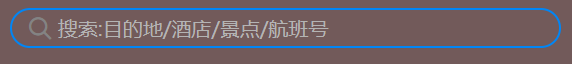
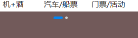

——var x=prompt(' ') : 将用户输入的值赋给x;
——变量的语法扩展：变量值以最后一次赋值为准；可以同时声明多个变量
——声明变量的特殊情况：只声明不赋值，控制台显示 undefined ；不声明不赋值，控制台会报错 ；不声明直接赋值，可以使用但不提倡
严格区分大小写；不能以数字开头；不能以关键字为名；名字需要有意义；首字母小写，后面单词首字母大写；
***尽量不用name作为变量名，其具有默认意义
js的数据类型，是由等号右边的值确定的；js是动态语言，数据类型可以改变
数字型（number）；布尔值类型（boolean）；字符串类型（string）；undefined；object;
八进制——0~7 逢8进10：程序里面数字前面加0表示八进制（控制台自动转化为十进制）
十六进制——0~9 a~f 逢10进1：数字的前面加0x 表示十六进制
最大值——Number.MAX_VALUE; 最小值——Number.MIN_VALUE;
无穷大——Infinity；无穷小—— -Infinity；非数字:NaN (控制台显示)
判断是否为数字：
console.log(isNaN(12));
返回值为false / ture
需要打引号（最好使用单引号）
引号嵌套——外单内双，外双内单
\n ——换行符 ; \ \——斜杠 ; \‘ ——单引号 ；\“ ——双引号 ；\t ——缩进 ; \b ——空格
获取字符串长度——str.length (str为字符串的名字)
字符串 + 任意类型 ==一个新的字符串
取值——ture false (参与加减法运算时，当作1和0计算)
typeof x; （检测x的数据类型）
***此方法只取整数，去除小数与非数字部分
***当首数字不为数字时，会显示NaN
***此方法保留小数
***不要直接比较两个浮点数
*** ===是全等符号，同时考虑数据值与数据类型
有C 的基础，只看案例
三元表达式——a>b?a:b;
switch的判断条件是全等！！
断点调试—— F12 -> sources
创建数组——1. var arr=new Array( )；2. var arr=[ ]
数组数据存储——不分类型，逗号隔开
获取数组元素——var x=arr[1];
获取数组长度——arr.length
数组转换为字符串——建立空字符串，遍历数组，依次添加
数组新增元素——1.修改length长度 2.修改索引号
function fun_name( 参数 ){ 表达式; } fun_name( 参数 )；
第二种声明函数方式—— var fun_name=function( 参数 ){ 表达式； }
数量一样则正常运行;若实参个数大于形参，则只取值至形参数量;若形参数量大于实参，多余的形参定义为undefined
若函数内没有返回值的设定，则调用结果为undefined
当我们不确定有多少个参数传递时，可以用arguments来获取，简言之，其储存了所有参数
以伪数组的形式展现，具有length属性，按索引方式储存数据
代码名字起效果的范围
类型——全局作用域（js文件），局部作用域（函数内部）
全局变量与局部变量
***在函数内没有声明直接赋值的变量也属于全局变量
***函数的形参也可以看做局部变量
***全局变量只有在浏览器关闭时才会销毁，比较占内存
内部函数访问外部函数的变量，采用的是链式查找方式，这种结构被称为作用域链——就近原则
js引擎会把js里面所有的 var 和 function 提升到当前作用域的最前面
把所有的变量声明提升到当前的作用域最前面，不提升赋值操作
xxxxxxxxxx
var name;//只是声明了一个变量，不进行任何操作
把所有的函数声明提升到当前的作用域最前面，不调用函数
xxxxxxxxxx
//第一类，变量式声明，无法正常调用
fun( );
var fun=function( ){ };
//第二类，函数可以正常调用执行
fun( );
function fun( ){ };
xxxxxxxxxx
var a=b=c=8;
//等价于——var a=8;b=a;c=b;
//在函数中，b和c属于全局变量，a属于局部变量
对象是一个具体的事物——水果不是对象，而桌子上的红苹果是对象
为什么需要对象——使表达结构更清晰更强大
xxxxxxxxxx
var obj={
uname:'chen',
age:18,
sayhi:function(){
console.log('hi');
}
}
属性赋值格式如上 多个属性用逗号隔开
xxxxxxxxxx
var obj=new Object();
obj.uname='chen';
obj.age=18;
obj.sayhi=function(){
console.log('hi');
}
优点——重复对象中的相同代码
xxxxxxxxxx
function fun(属性){
this.属性=属性值;//必须添加this!!!
this.方法=function(){ }
}
new fun(属性值,属性值);
//调用
var cy=new fun(属性值，属性值);//命名
console.log(cy.属性);
***构造函数不需要 return，调用时返回的是一个对象
xxxxxxxxxx
//1.对象名：属性名
var name = obj.uname;
//2.对象名+['属性名']
var name=obj['uname']
//3.对象名.方法名
obj.sayhi();
1.都用于储存数据 2.变量需要声明，属性不需要声明
1.都是实现某种功能 2.函数单独声明且调用
xxxxxxxxxx
for(var k in obj){
console.log(k);//输出的是属性名（uname，age...）
console.log(obj[k]);//输出的是属性值（'chen'，18...）
}
js自带的对象，供开发者使用
***不是构造函数，直接使用即可
xvar a = Math.PI;//圆周率
var a=Math.max(1,5,8,56...);//求最大值
//***若存在非数字，则NaN；若无参数，则为负无穷
var a=Math.abs(y);//取y的绝对值
//***若存在字符串形的数字，则自动转换
var a=Math.floor(y);//向下取整（不大于y的最大值）
var a=Math.ceil(y);//向上取整
var a=Math.round(y);//四舍五入
//***其他数字四舍五入，.5往大了取，负数同理，-1.5->-1
该对象返回一个属于 [ 0 , 1 ) 的随机数，不需要参数
***得到指定范围的随机整数（包含两端）：
xxxxxxxxxx
function get(min,max){
return Math.floor(Math.random()*(max-min+1)+min);
}
经典猜数游戏案例
xxxxxxxxxx
alert('猜数游戏');
alert('系统随机生成1~100的整数,请根据猜测后的提示猜出这个数')
function num(min, max) {
return Math.floor(Math.random() * (max - min + 1) + min);
}
var number = num(1, 100), ynum = prompt('您所猜的数是');
while (1) {
if (ynum > number) {
alert('错误，好像猜大了些');
ynum = prompt('您所猜的数是');
} else if (ynum < number) {
alert('错误，好像猜小了些');
ynum = prompt('您所猜的数是');
} else {
alert('恭喜您猜对了！');
break;
}
}
Date属于构造函数，需要new来调用
xxxxxxxxxx
var date=new Date();//无参数则返回当前时间
var date=new Date('2019-5-1');//有参数则返回参数时间
xxxxxxxxxx
var date=new Date();
var year = date.getFullYear();//得到本地当前年份
var month = date.getMonth()+1;//原本返回的月份小一个月，需要加一
var day = date.getDate();//返回当前日期
var weekday = date.getDay();//返回星期几，注意星期天返回值为0
//***得到习惯大写星期时，可以采用数组索引的方式实现
var hour = date.getHours();//小时数
var min = date.Minutes();//分钟数
var sec = date.getSeconds();//秒数
//补零效果实现：
hour=hour<10?'0'+hour:hour;
起始时间——1970.1.1
xxxxxxxxxx
var date=new Date();
//四种方法都可以实现
var min=date.valueOf();
var min=date.gerTime();
//最常用
var min=+new Date();
//H5新增
var min=Date.now();
核心算法——输入时间减去当前时间
方法——利用时间戳
xxxxxxxxxx
function cou(intime) {
var now = +new Date();
var input = +new Date(intime);
var times = (input - now) / 1000;
var d = parseInt(times / 60 / 30 / 24);
var h = parseInt(times / 60 / 60 % 24);
var m = parseInt(times / 60 % 60);
var s = parseInt(times % 60);
alert('离活动结束还有' + d + '天' + h + '时' + m + '分' + s + '秒');
}
cou('2025-9-8 12:00:00');
xxxxxxxxxx
var arr=new Array();//create an empty array;
var arr=new Array(2);//create an empty array with 2 elements
xxxxxxxxxx
var a = [];//create a variate
var bool = a instanceof Array;//运算符判断是否为数组，返回值为true 或者false
var bool2 = Array.isArray(a);//H5新增方法
xxxxxxxxxx
var arr=[1,2,3];
arr.push(a,b,c.);//在数组后追加元素
var l=arr.push(a,b,c);//l是新数组的长度
arr.unshift(a,b,c.);//在数组前追加元素，返回值同样是新数组长度
xxxxxxxxxx
arr.pop();//删除数组最后一个元素，返回值为删除的那个元素，一次只能删一个
arr.shift();//删除数组第一个元素，返回值为删除的那个元素
xxxxxxxxxx
//翻转数组
arr.reverse();
//数组排序(冒泡排序)——完美写法
//升序
arr.sort(function(a,b){
return a-b;
});
//降序
arr.sort(function(a,b){
return b-a;
});
xxxxxxxxxx
var arr = ['red','pink','white'];
var num=arr.indexOf('red');//返回值为第一个出现的索引号0
var num=arr.lastIndexOf('red');//返回值同上，不同之处只有查找的顺序
//若数组中不存在查找的元素，则返回-1
运用——数组去重：通过indexOf返回值判断元素是否重复
xxxxxxxxxx
var arr=[1,2,3];
var str=arr.toString();//将arr转换为'1,2,3'的字符串
var str1=arr.join('/');//将arr转换为 / 分隔的字符串（1/2/3）
xxxxxxxxxx
var arr = [1,2,3,4,5,6];
var arr1 = arr.slice(n.m);//n与m为整数
//截取索引为n到索引为m的数组元素
//若n大于数组长度，则返回空数组；若n或者m为负数，则表示倒数第n/m个元素；m为-1时，新数组不包括元素组最后一个元素
var arr2=arr.splice(a,b,' ');
//a为做修改的起始索引，b为删除数量，' '为添加的元素
// b<=0 时不删除，至少添加一个新元素
//b>=1 时删除包括arr[a]在内的b个元素
***基本包装类型——把简单数据类型 包装成 复杂数据类型 的方式
***字符串不可变——看上去内容改变，其实只是开辟了新空间，发生了地址改变
xxxxxxxxxx
.father{
display:flex;
}
***任何容器都适用
***父盒子设为flex布局后，子盒子的float，clear，vertical-align将失效
默认主轴为x轴（从左到右），侧轴为y轴，
xxxxxxxxxx
flex-direction:row;
flex-direction:row-reverse;/*主轴为x轴，从右到左*/
flex-direction:column;/*主轴变为y，从上到下*/
默认为从左到右排列
*使用前一定要设置好主轴方向
xxxxxxxxxx
justify-content:flex-end;/*从右到左*/
justify-content:center;/*居中对齐*/
justify-content:space-around;/*平分剩余空间*/
justify-content:space-between;
/*先两边贴边，再平分剩余空间*/
***默认永不换行（nowrap），有可能会影响子盒子大小
xxxxxxxxxx
flex-wrap:wrap;/*换行*/
***默认拉伸
***仅限于元素单行排列的情况
xxxxxxxxxx
align-items:center;/*居中对齐*/
/*配合主轴居中对齐实现子元素位于中心的效果*/
align-items:stretch;/*拉伸，不要给高度*/
***默认在侧轴头部开始排列
***对单行无效哦，界定标准——是否换行
xxxxxxxxxx
flex-content:center;/*居中*/
flex-content:space-around;/*平分剩余空间*/
flex-content:space-between;/*先贴边再平分*/
flex-content:stretch;/*子元素高度平分父元素高度*/
***同时设置主轴方向与换行
xxxxxxxxxx
flex-flow:row wrap;/*复合两个取值*/
***指对盒子余下空间的占额
xxxxxxxxxx
flex:num;//num为数字
运用：可以复刻京东搜索栏的效果，中间元素不需要设置宽度，直接占据剩余空间即可
***优势：等分子盒子时无需计算，直接使用flex:1; 屏幕宽度变化时，比例不变
***允许某个单个项目有不同于其他元素的排列方式
xxxxxxxxxx
align-self:flex-end;/*元素在侧轴的末尾排列*/
2.3控制子项的排列顺序——order
***取值默认是0，小于零则在原位置前面，大于零在原位置后面
b站视频课的携程案例网页发生了改变，所以就自己尝试写一下吧！
大盒子——400px * 652px

心得——1.字体图标/精灵图 与字结合时，前者使用子绝父相定位，后者直接写在父盒子里，不然位置会受影响
心得——1.给父盒子设置flex，其他子项平均分配空间，前四个盒子设置左边框，得到间距效果
2.图片采用子绝父相，文字运用text-align 与padding-top 调整位置
方式大同小异；大盒子需要设置flex-wrap:wrap；使十个盒子按两排排序

***元素高度和宽度等比变化
一种相对单位，相对于html元素的文字大小
xxxxxxxxxx
html{
font-size:14px;/*html元素大小*/
}
div{
width:10px;/*宽度为14*10==140px*/
}
***新语法，针对不同媒体类型定义不同的样式，针对不同的屏幕尺寸设置不同的样式
xxxxxxxxxx
@media mediatype and|not|only (media feature){
CSS-Code;
}
1 .all ——用于所有设备
***and——将多个媒体符连接到一起，即“且”，常用
not——排除某一种媒体类型，可以省略
only——指定某一种媒体类型，可以省略
width——可视宽度
min-width——最小宽度
max-width——最大宽度
xxxxxxxxxx
@media screen and (max-width:800px){
body{
background-color:black;
}
}
/*当我们的电脑屏幕小于800px时，网页颜色为黑色*/